Stomatološka ordinacija u Inđiji
Zdravi zubi za zdraviji život.
Sve vrste stomatoloških usluga — od preventive do implantata — uz savremenu opremu i tim koji vam uvek objasni šta radi i zašto.
Pon–pet 08–16h · Sub 09–13h
Stomatološka ordinacija u Inđiji
Zdravi zubi za zdraviji život.
Sve vrste stomatoloških usluga — od preventive do implantata.
35+ godinaiskustva u Inđiji
10 oblastistomatologije na jednom mestu
BG & NSsaradnja sa specijalistima
EU standardopreme i materijala
O ordinaciji
Lična pažnja. Pouzdana nega.
Ordinaciju je 1990. osnovala dr Spomenka Novaković i od tada je vodi. Pružamo sve vrste stomatoloških usluga, a najsloženije intervencije radimo u koordinaciji sa priznatim specijalistima iz Beograda i Novog Sada. Zato nam dolaze pacijenti i iz okolnih opština i iz inostranstva.
35+godina rada
10vrsta tretmana
Šta radimo
Naše usluge
Izaberite uslugu da vidite šta obuhvata. Za svaku možete odmah zakazati termin.
Naš pristup
Šta možete da očekujete kod nas
Od prvog razgovora do poslednje kontrole — svaki korak je jasan, miran i dogovoren sa vama.
01
Prvo razgovaramo
Saslušamo šta vas muči i šta želite, pa tek onda predlažemo rešenje. Nijedna odluka se ne donosi bez vas.
02
Jasna dijagnoza
Snimak radimo u ordinaciji i odmah vam pokažemo šta vidimo. Plan lečenja i cenu dobijate u istoj poseti.
03
Lečenje bez bola i žurbe
Radimo u anesteziji kad god je potrebno i ostavljamo dovoljno vremena za svakog pacijenta.
04
Briga i posle tretmana
Dobijate uputstva za kuću i podsetnik za kontrolu — da rezultat traje što duže.
Česta pitanja
Kratki odgovori na pitanja koja čujemo svaki dan. Ako ne nađete svoje, pozovite nas.
022 / 555-408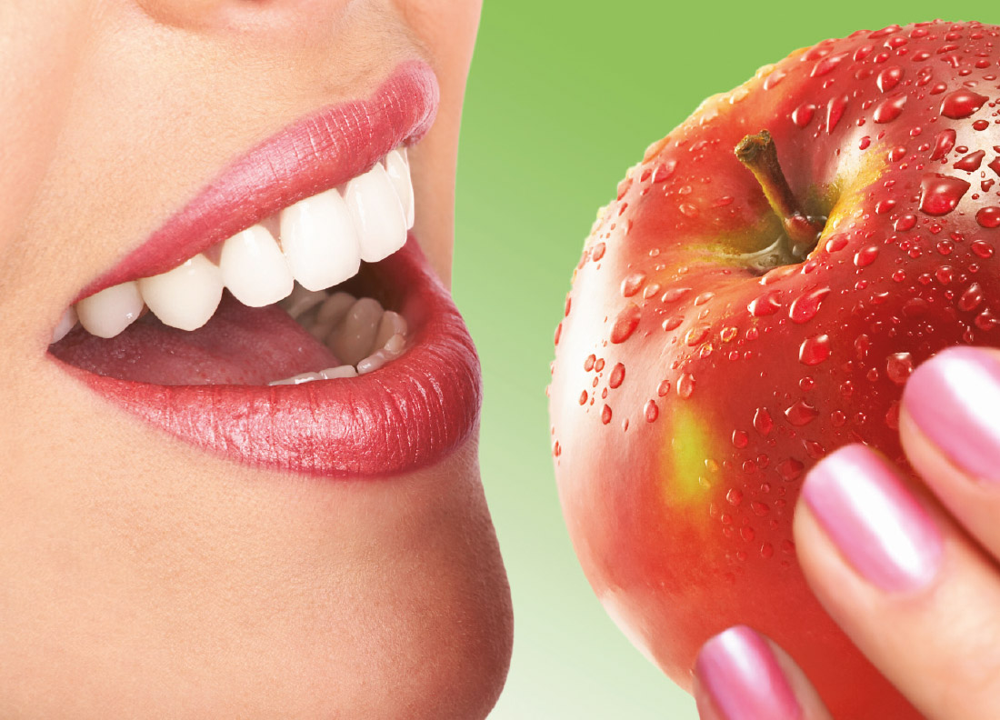
{{ f.a }}
Termin zakazujete
telefonom.
Telefon022 / 555-408
E-poštahelioprogressindjija@gmail.com
Radno vremePon–pet 08–16h · Sub 09–13h
AdresaKralja Petra I 78, I sprat, Inđija
Zakazivanje termina
022 / 555-408Termine zakazuje osoblje ordinacije, u dogovoru sa vama. Pozovite radnim danom 08–16h ili subotom 09–13h.
Pozovite sadaStomatološka ordinacija „Helioprogress“, čije se sedište nalazi u Inđiji, počela je sa radom aprila 1990. godine.
Stomatolog dr Spomenka Novaković, vlasnik ordinacije, trudila se sve ove godine da „Helioprogress“ izraste u ordinaciju koja će svoje usluge pružati na najvišem mogućem nivou.
Da se u tome uspelo svedoči činjenica da usluge naše ordinacije koriste i ljudi sa adresom stanovanja izvan inđijske opštine. Najsloženije intervencije obavljaju se u koordinaciji sa izuzetno priznatim specijalistima iz Beograda i Novog Sada, a kod nas se veoma uspešno pružaju i hirurške i ortodontske usluge.
Saradnja sa specijalistima
Neki slučajevi traže dodatno znanje i iskustvo. Zato godinama sarađujemo sa priznatim specijalistima iz Beograda i Novog Sada — iz oblasti oralne hirurgije, implantologije, ortodoncije, parodontologije, stomatološke protetike i dečije stomatologije.
Za vas to znači da i najsloženiji tretman možete obaviti ovde, u Inđiji, uz ordinaciju i tim koje već poznajete. Mi koordiniramo termine, pripremu i kontrole, pa ne morate sami da tražite specijalistu i putujete.
Prevencija na prvom mestu
Verujemo da su preventivna nega i obrazovanje put do optimalnog zdravlja zuba. Zato vam dajemo savete i pomažemo da razumete kako da se brinete o svojim zubima.
Predlaganje tretmana
Kada vam nudimo tretman, uzimamo u obzir vaše želje. Objašnjavamo koje mogućnosti stoje na raspolaganju i koliko koja košta, tako da možete napraviti izbor. Ako u bilo kom trenutku imate pitanje, pitajte nekog od članova tima — biće im drago da vam sve objasne.
Prvi dolazak
Pozovite za termin
Kako izgleda vaša prva poseta
KORAK 1
Dočekamo vas
Upoznamo se, popunimo karton i porazgovaramo o tome šta vas je dovelo.
KORAK 2
Pregled i snimak
Pažljivo pregledamo zube i desni, a po potrebi napravimo snimak na licu mesta.
KORAK 3
Plan i cena
Objasnimo šta smo videli, predložimo mogućnosti i kažemo cenu pre početka rada.
KORAK 4
Vi odlučujete
Termin za lečenje zakazujemo tek kada vam je sve jasno — bez pritiska.
Šta radimo
Naše usluge
Izaberite uslugu da vidite šta obuhvata. Za svaku možete odmah zakazati termin.
Šta obuhvata
{{ pt.t }}
{{ pt.d }}
Kada da se javite
Šta je važno da znate
{{ p }}
Kako izgleda tretman
{{ st.n }}
{{ st.t }}
{{ st.d }}
Pitanja pacijenata
{{ f.a }}
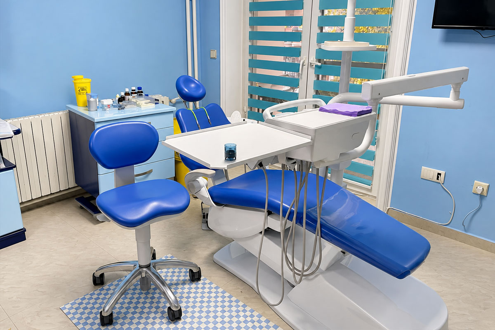
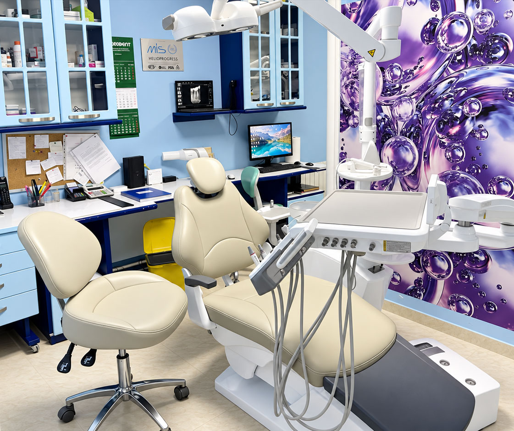
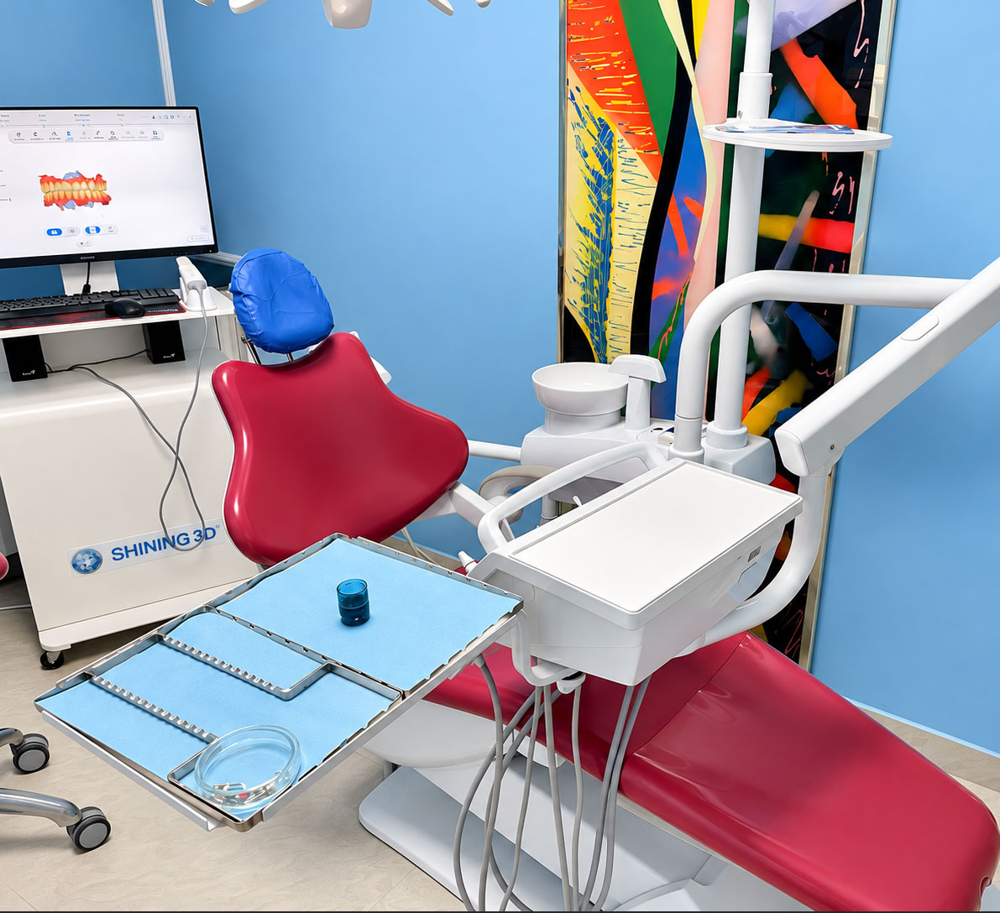
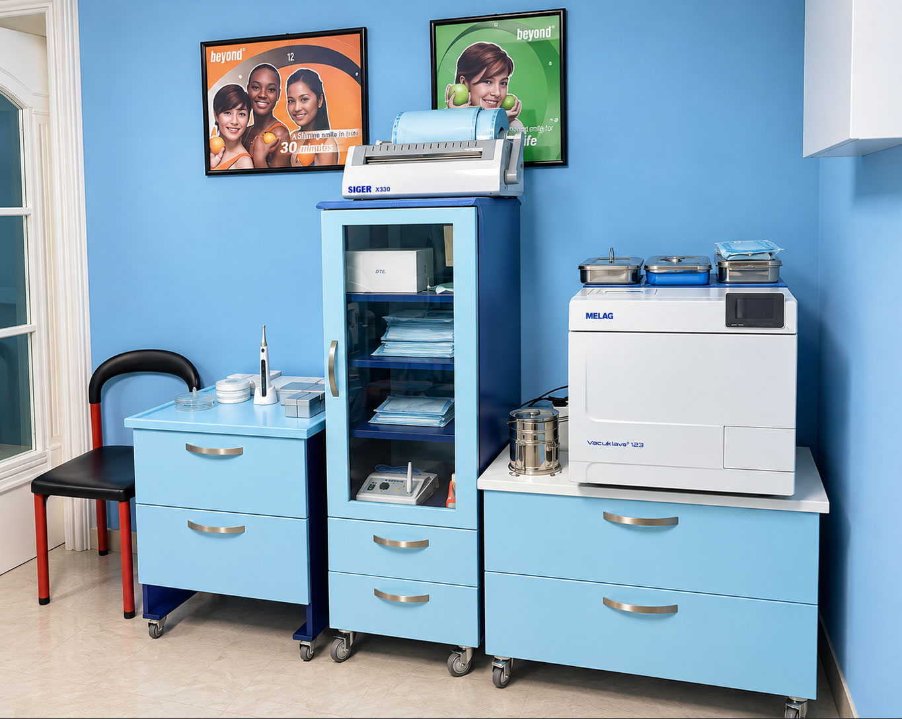
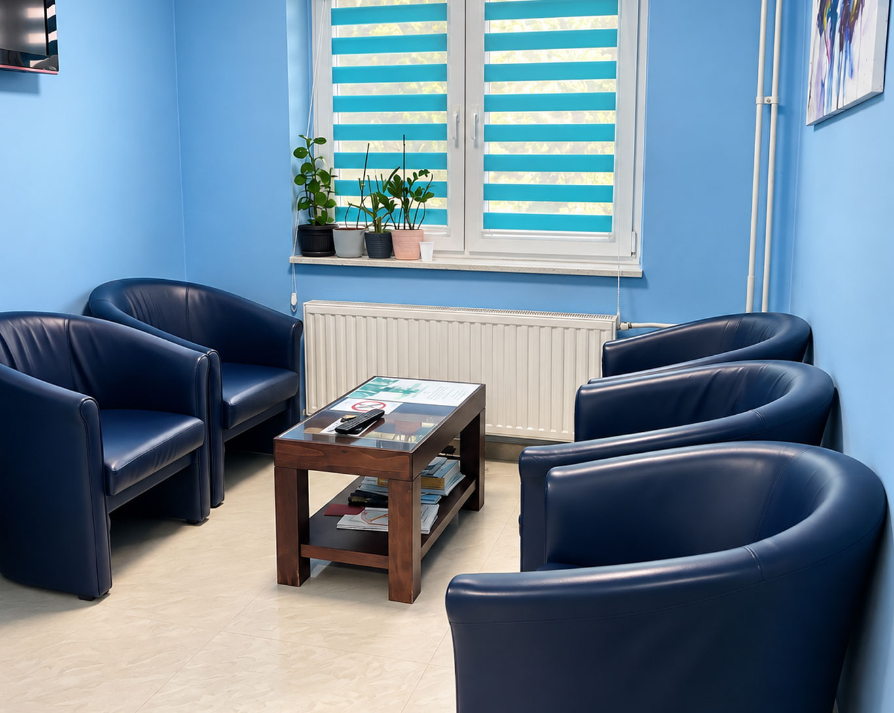
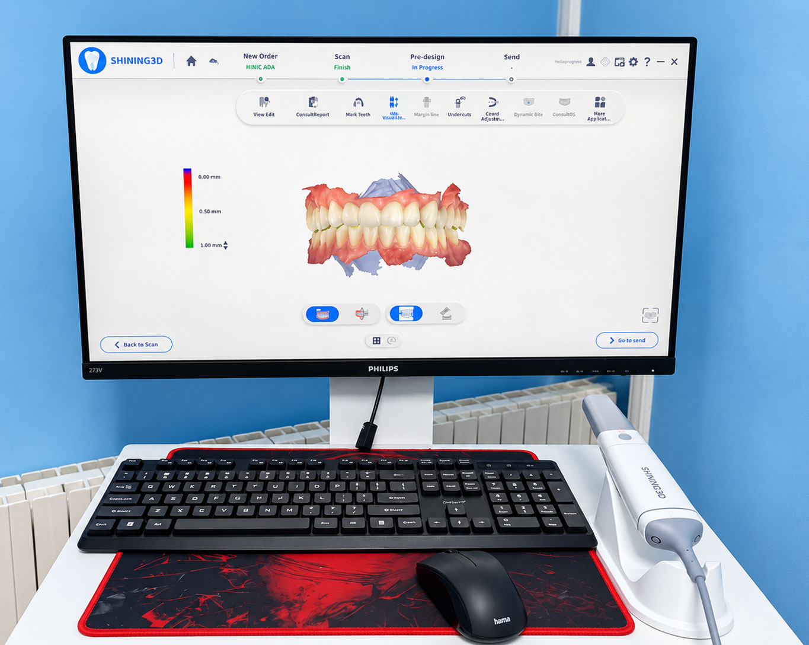
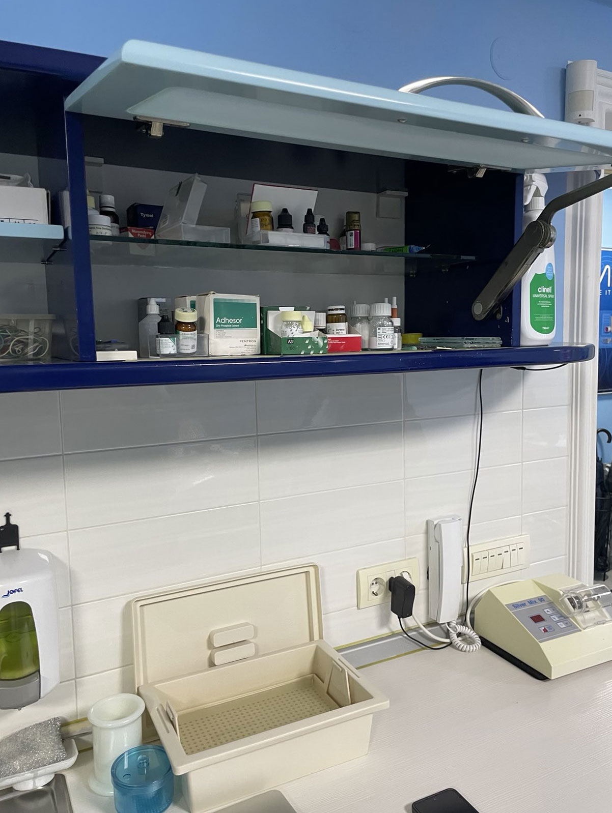
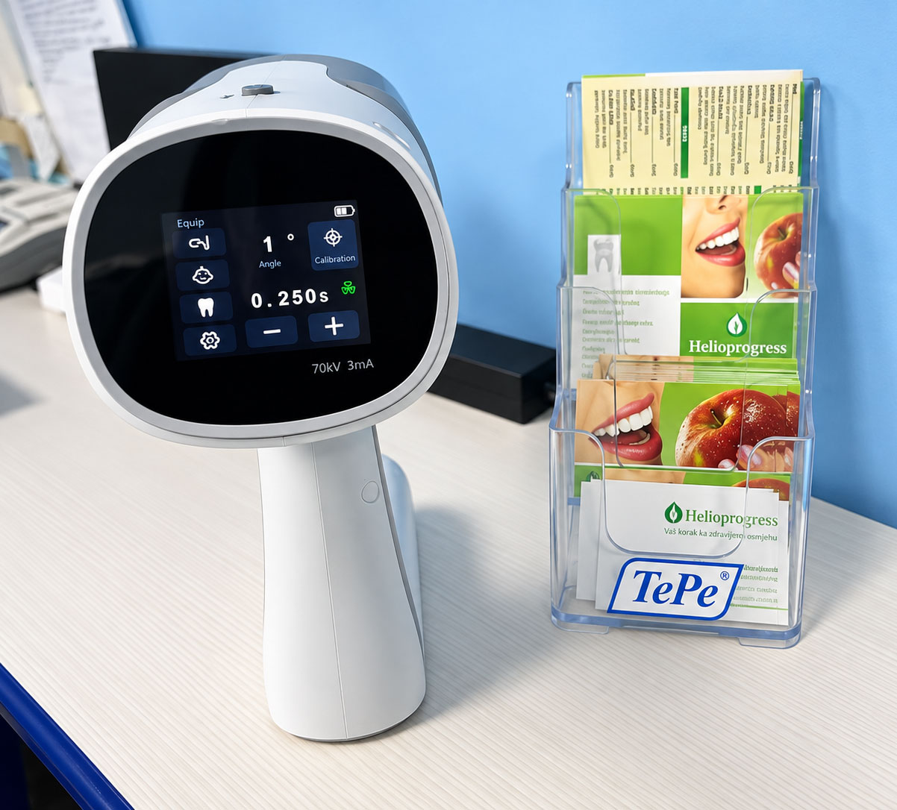
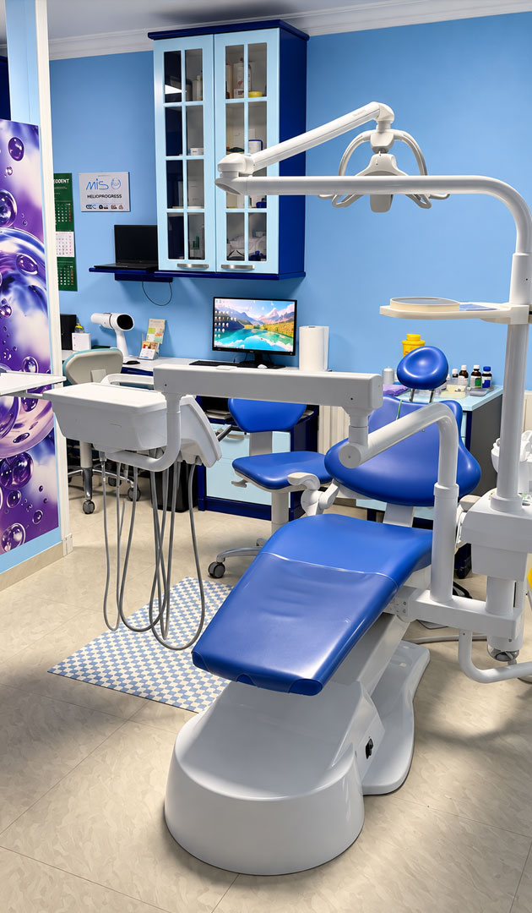
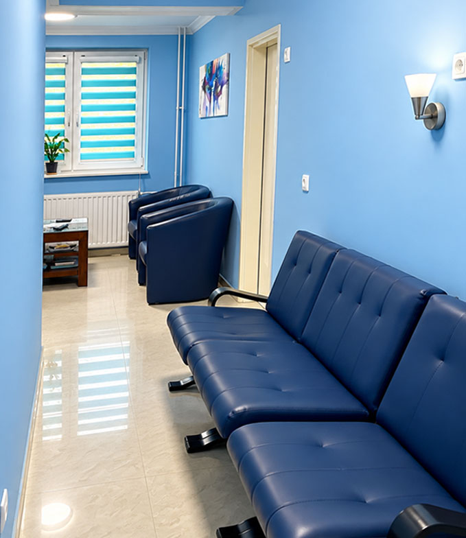
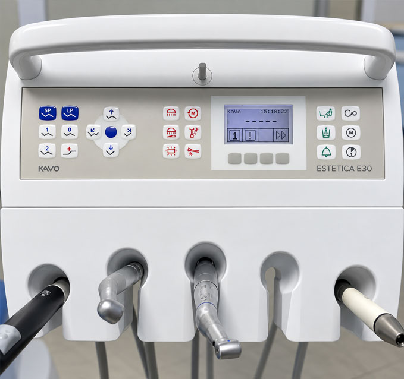
Pacijenti nam svakodnevno postavljaju slična pitanja — o bolu, higijeni, kontrolama i lečenju. Ovde smo sakupili kratke i jasne odgovore na ona najčešća. Ako vaše pitanje nije na listi, slobodno nas pozovite.
{{ f.a }}
Adresa
Kralja Petra I 78, I sprat, stan 4
22320 Inđija
Telefon
Radno vreme
Ponedeljak–petak 08:00–16:00
Subota 09:00–13:00
Nedelja zatvoreno
Prebacite lokaciju sa računara na telefon
Uperite kameru telefona u kod — lokacija ordinacije otvoriće se u Google mapama, spremna za navigaciju. Ili kopirajte link i pošaljite ga sebi porukom.